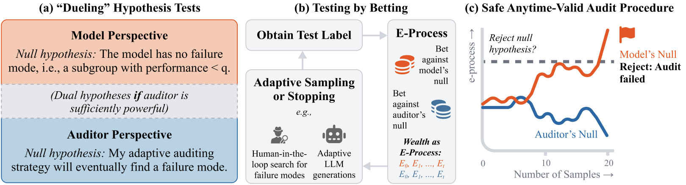

When auditing generative AI systems, the dominant practice in industry is to probe for failure modes using small, adaptively chosen test suites of 10–50 cases (e.g., here, here, and here). Because the sampling scheme and stopping rules are decided interactively in the midst of data collection, classical statistical assumptions are violated, inflating Type I errors under standard frameworks. But is there a statistical justification for the current practice? Can we actually draw statistically rigorous conclusions about model robustness from fully adaptive audits, sometimes with as few as 20 observations?
This is a tricky problem, since there is a fundamental asymmetry in auditing: while failing a sequence of tests may be sufficient to prove that a system is not robust, passing a targeted test suite does not necessarily certify global robustness. To address this, we'll actually need two hypothesis tests, not just one. We call them "dueling" hypothesis tests: there is the model's null, which asserts the model has no failure mode, versus the auditor's null, which asserts the auditor has some arbitrarily adaptive strategy that will uncover a failure mode. While these two hypothesis tests aren't exact opposites in practice, we can prove something interesting from a theoretical perspective: if the auditor is sufficiently powerful and gets sufficiently many attempts, these two hypotheses become asymptotic inverses so an AI system passing a stringent audit does indeed certify its global robustness. This theoretical result has two implications: (i) get a strong auditor and (ii) be wary of claims of AI system robustness if it has only undergone weak/limited testing.
With this dueling hypothesis framework in place, the question is how we can actually test these hypotheses as fast and as adaptively as possible. Here we leverage recent work in testing-by-betting from Safe Anytime-Valid Inference (SAVI) (Shafer, 2021; Ramdas & Wang, 2025), where the idea is that we can conduct a hypothesis test by playing a betting game. For testing the model's null, the auditor adaptively places bets on which subgroup/queries it thinks the model performs poorly on. Winning the bet multiplies their wealth; losing the bet decreases their wealth. At the same time, the game is designed such that there is no winning under the null hypothesis, regardless of what strategy the auditor tries to use. So if an auditor is able to accumulate enough wealth, there is sufficient evidence to reject the null. We can setup a similar game for testing the auditor's null.
Formally, this cumulative wealth process is cast as an e-process, which gives us finite-sample bounds on the probability that the e-process will cross a given threshold. The e-process is the sequential version of the e-value, and the e-value is the SAVI analogue of the classical p-value from standard hypothesis testing. One difference is that while a smaller p-value indicates more evidence against the null, here we want a larger e-value (i.e., wealth).
\(H_0:\ \forall S \in \mathcal{S}_\epsilon,\ V(S) \geq q\)
\(H_1:\ \exists S \in \mathcal{S}_\epsilon \text{ s.t. } V(S) < q\)
\(H_0^{m}:\ \exists \tau \le m,\ \forall t \geq \tau,\ V(S_t^\pi) < q\)
\(H_1^{m}:\ \forall \tau \le m,\ \exists t \geq \tau \text{ s.t. } V(S_t^\pi) \geq q\)
The formal definitions of the dueling hypothesis tests: \(\mathcal{S}_\epsilon\) is the collection of subgroups with prevalence at least \(\epsilon\); \(V(S)\) is average accuracy on subgroup \(S\); \(q\) is the target performance threshold; \(S_t^\pi\) is the subgroup selected by the auditor's adaptive strategy \(\pi\) at step \(t\); and \(m\) is the auditor's budget.
Imagine an LLM is being tested on a dataset of GPQA-style science questions, where there are questions from domains (Biology, Chemistry, Physics) and school levels (elementary school, middle school, high school). Your task is to figure out if there is a category that our hypothetical LLM does poorly on. To reach statistical significance with Type I error rate controlled at \(\alpha=0.05\), the auditor (you) wins the game if the e-process (your wealth) exceeds \(1/\alpha=20\). Try to do this by sampling as few questions as possible!
@inproceedings{Zhou2026-hn,
title = {Adaptive auditing of {AI} systems with anytime-valid guarantees},
author = {Zhou, Siyu and Vossler, Patrick and Sivaraman, Venkatesh
and Mai, Yifan and Feng, Jean},
booktitle = {Advances in Neural Information Processing Systems},
year = {2026}
}